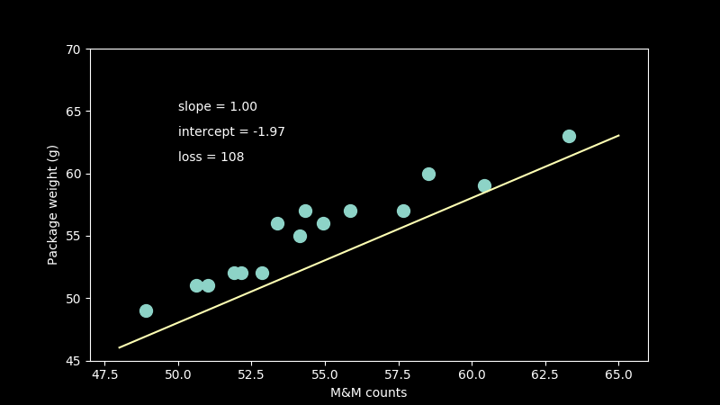
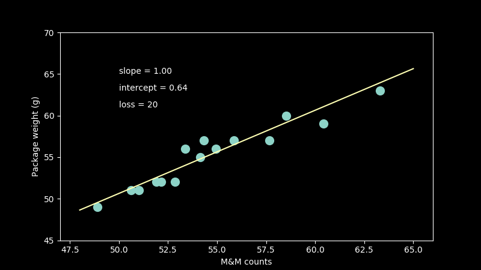
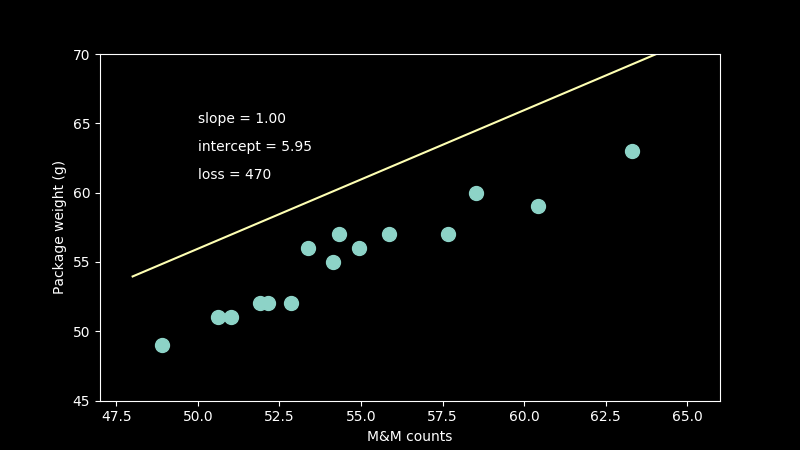
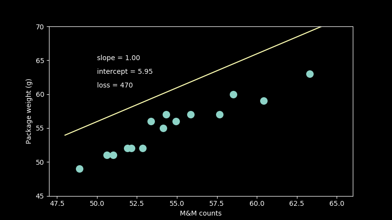

Video is a natural way for us to understand three dimensional information. It's how we navigate the world. Converting images to video is a great way to level up your data science results. It helps you to communicate more clearly and it gives you eye-catching GIFs in the process. Here is a quick way to do it.
  

ffmpeg -pattern_type glob -i '*.png' -y -c:v libx264 movie_name.mp4
prerequisites
after
video to frames incantation